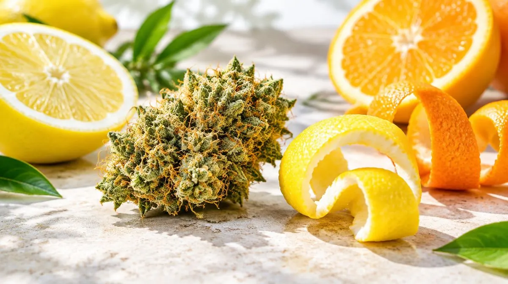

Local guides · 7 min read
Weed Delivery in Yonkers and Westchester: How It Works
Toke delivers from the Yonkers store at 471 McLean Ave to most of lower and central Westchester. The order minimum is $75, and the person who placed the order has to be there at the door with a valid government photo ID. Delivery is free on orders of $75 or more.
Everything else is logistics: which towns the drivers reach, how late you can order and still get it tonight, and what you can hand a driver as payment. New York dispensaries cannot take credit cards, so plan on cash or debit.
If you want the ordering screens walked through one at a time, how online ordering works at Toke is the deeper version of that process. This page is about the delivery side specifically.
What to know up front

- Delivery runs out of the Yonkers store at 471 McLean Ave, open 10:00 AM to 10:30 PM Sunday through Thursday and 10:00 AM to 11:00 PM Friday and Saturday, phone 914-207-1545.
- The delivery minimum is $75 before tax. Delivery is free on orders of $75 or more.
- The purchaser has to accept the delivery in person and show a valid government photo ID proving they are 21 or older. A roommate cannot sign for it, and neither can a doorman.
- Drivers take cash or debit. No licensed New York dispensary can run a credit card, because cannabis is federally illegal and the card networks will not process it. Some Toke drivers carry PIN debit terminals.
- New York’s adult-use daily limit is 3 ounces of flower or 24 grams of concentrate, and a delivery order counts against that limit the same way a counter purchase does.
Which Westchester towns does Toke deliver to?

McLean Ave sits in the southeast corner of Yonkers, right on the Bronx line, so the delivery radius is densest in the south of the county and reaches north and east from there. The Bronx River Parkway, the Saw Mill, and Central Park Avenue are the three corridors drivers actually use, and how far you are from one of them matters more than raw mileage.
Each town below has its own page with the specifics for that address:
White Plains, Mount Vernon, New Rochelle, Bronxville, Tuckahoe, Eastchester, Scarsdale, Hartsdale, Pelham, Larchmont, Mamaroneck, Hastings-on-Hudson, Dobbs Ferry, Elmsford, Harrison, and Port Chester.
In Yonkers itself, delivery covers ZIP codes 10701, 10703, 10704, 10705 and 10710. Details are on the Yonkers store page.
Coverage reaches further north and east than that list. If your town is not linked above, enter your address on the menu and it will tell you before you build a cart.
How late can I place a delivery order?

Order earlier than you think you need to. The store takes orders during its posted hours, but a delivery placed at 10:15 PM is competing with everything already loaded in a driver’s car. Mid-afternoon on a weekday is the quietest window, Friday and Saturday evening the busiest.
Distance changes the math. A Bronxville or Mount Vernon address is a short run from McLean Ave. A White Plains or Port Chester address is a real drive, longer still in late-afternoon traffic on the Bronx River Parkway. You get an ETA when the order is confirmed and a text from the driver when they are close.
What do I need to have ready when the driver shows up?

A valid, unexpired government photo ID, in your hand, matching the name on the order. A New York driver license, a non-driver ID card, a passport, or a military ID all work. A photo of your ID on your phone does not, and a temporary paper license without a photo does not either.
You also have to be the one who answers the door. New York requires the purchaser to accept delivery, so sending your roommate down to the lobby means the driver leaves with the order. If you live in a building with a locked vestibule, put the buzzer code or the apartment number in the delivery notes when you check out.
How do I pay for a weed delivery in Westchester?

Cash or debit. Credit cards are off the table at every licensed dispensary in the state, not just this one, because cannabis remains federally illegal and the major card networks will not clear the transaction. Some drivers carry a PIN debit terminal, so a debit card usually works at the door, but bringing cash is the version that never fails.
Have the payment ready before the driver arrives. Tips are appreciated and are not required, and drivers do not carry a float for breaking large bills.
How to place a delivery order, step by step

- Open the Yonkers menu and enter your delivery address so the menu shows you what is actually deliverable to you.
- Build a cart that clears $75 before tax. The running total on the cart page is what counts.
- Check out and select delivery. The first-order discount applies at checkout automatically, no code to type in.
- Confirm you will be home, with ID, in the ETA window you are given.
- Watch for the driver text, meet them at the door, show the ID, pay in cash or debit.
Most of the friction people hit is at step one. Enter the address first, then browse, and you will not build a cart around something that turns out to be pickup-only.
How do I hit the $75 minimum without buying things I don’t want?

Stack down, not up. Two things you were going to buy anyway plus one thing you have been curious about beats one expensive jar you do not need. Value flower is the easiest lever here: the best value flower in Westchester covers smalls, 7 gram jars, and the mid-tier eighths that carry their weight, and any of those will move a cart twenty or thirty dollars without wasting the money.
The other lever is timing. Weekly drops and standing discounts change what a full cart costs, and the current deals at both Toke stores are worth a look before you check out rather than after. Delivery is free on orders of $75 or more.
Delivery or pickup: which one makes more sense from McLean Ave?

Pickup wins if you are close and you want to look at the jars. The store is a few minutes off Central Park Avenue, the McLean Ave strip has street parking that is findable outside of rush hour, and a budtender can pull a few jars off the shelf and tell you which one smells right.
Delivery wins when you already know what you want, when you are north or east of the store, or when the drive would take longer than the wait. If you are deciding where Toke fits against the rest of the county, the Westchester County dispensary guide lays out which towns have licensed shops of their own.
Frequently asked questions

Does Toke deliver weed to Yonkers? Yes. Delivery runs out of the store at 471 McLean Ave and covers Yonkers along with most of lower and central Westchester. The minimum is $75. Delivery is free on orders of $75 or more.
How late can I order weed delivery in Westchester? The Yonkers store is open until 10:30 PM Sunday through Thursday and 11:00 PM Friday and Saturday and orders are taken during store hours, but on a busy night the last delivery window can fill before closing time. Order at least an hour before close if you want it that evening.
Can someone else accept my delivery? No. New York requires the purchaser to be present and to show a valid government photo ID at the door. A roommate, a partner, or a building doorman cannot take the handoff for you.
Can I pay a weed delivery driver with a credit card? No. Licensed New York dispensaries cannot accept credit cards because cannabis is federally illegal and the card networks will not process it. Bring cash, or ask whether your driver is carrying a PIN debit terminal.
How much can I buy in one delivery order? Up to New York’s adult-use daily limit, which is 3 ounces of flower or 24 grams of concentrate. The Office of Cannabis Management sets that limit, and it applies whether you are buying at the counter or at your door.
How do I know a delivery service is actually licensed? Look the shop up in the state’s licensed dispensary verification tool before you order. Toke holds OCM retail licenses OCM-RETL-25-000418 and OCM-RETL-25-000344.
Order from the Yonkers menu
The about page has the short version of who is behind the counter. Otherwise, enter your address on the menu and build a cart.
Toke Yonkers, 471 McLean Ave, Yonkers, NY, 914-207-1545, open 10:00 AM to 10:30 PM Sunday through Thursday and 10:00 AM to 11:00 PM Friday and Saturday. Toke Spring Valley, 2 S Central Ave, Spring Valley, NY, 845-406-3004, open daily 10:00 AM to 11:00 PM. Rockland County deliveries run out of that store instead.
Bring an ID, bring cash or a debit card, and be the one who answers the door.
Keep reading
More from the blog

Best Cannabis Flower Brands in Westchester
The flower brands worth your money at a Westchester counter right now are Connected x Alien Labs first, then Ayrloom , Florist Farms , and Wizard…

Best Sativa Strains in Westchester
The best sativa leaning flower in Westchester is the jar that still smells loud through the lid. Read the terpene list before the THC number. Citrus…

Dispensary vs. Smoke Shop: What’s the Real Difference?
This question comes up at Toke Cannabis almost every single day, usually right after someone walks in and looks relieved.
Two stores · open 7 days
Order tonight, pick it up in minutes
Order online for in-store pickup, curbside pickup, or delivery across Westchester and Rockland. Free delivery on orders of $75 or more.